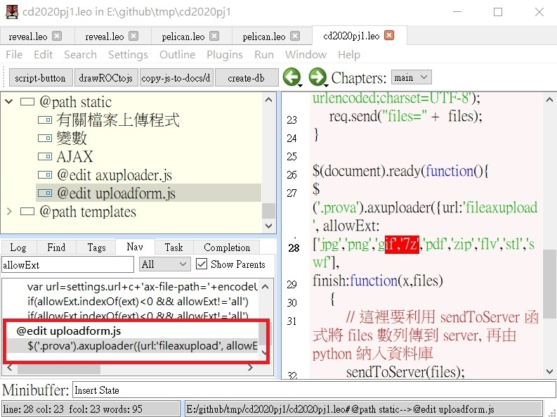
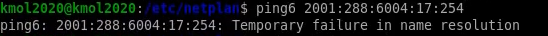
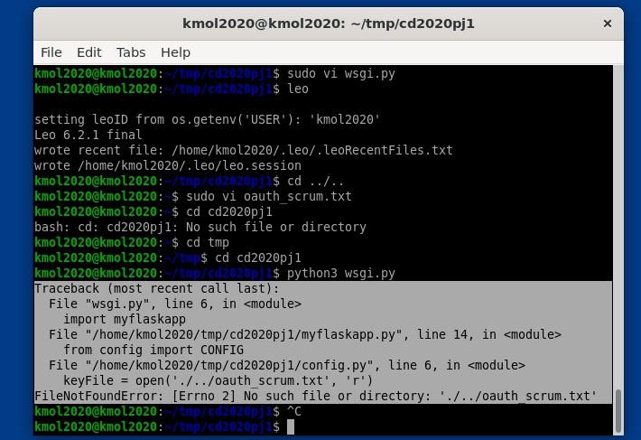
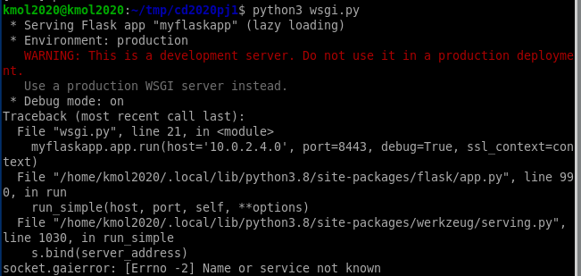

vi 與 vim 的指令整理 <<
Previous Next >> Assignments
Q&A
網頁無法顯示Brython，Spur Gear 導入錯誤，案F12來開啟Console檢查錯誤。
問題(一)如下圖

解決方法:
開啟本倉儲資料夾，打開flaskapp.py，案ctrl+f來找到page_content = request.form['page_content']，有2個地方都在底下加入
page_content = page_content.replace('// <![CDATA[', '')
page_content = page_content.replace('// ]]>', '')
save後即可解決問題。
====================================================================
問題(二)如下圖
解決方法:
檢查本倉儲資料夾static底下是否有brython.js與brython_stdlib.js，沒有的話就必須加入這2個js檔案，有的話就是導入指令錯誤如:
<script src="./../cmsimde/static/brython.js"></script>
<script src="./../cmsimde/static/brython_stdlib.js"></script>
必須改為:
<script src="/static/brython.js"></script>
<script src="/static/brython_stdlib.js"></script>
即可解決顯示問題。
問題(三)如下圖:
python wsgi.py 無法執行的話
將start_mdecourse用編輯器打開
path=%path%;%Disk%:;%path_python%;%path_msys2%;%path_tcc%;%path_git%;%path_cmake%;%path_coreutils%;
改成
path=%Disk%:;%path_python%;%path_msys2%;%path_tcc%;%path_git%;%path_cmake%;%path_coreutils%;%path%;
如下圖就可以解決。

問題(四)如下圖:
出現了亂碼的話，開啟Options。
把cp950改成utf-8如下圖，就可以解決。
問題(五)如圖下:

因為之前putty是ipv6，現在網路改成ipv4，所以putty要改成None(如下圖)。

問題(六)更新至python3.8.2後，輸入leo軟體開起來會閃退:
1.輸入 pip list ，檢查leo 版本是否為 6.1 版。
2.是的話就先卸載 pip uninstall leo 。
3.再重新載一次 leo ，輸入 pip install leo==6.2.1 來只訂版本。
4.載完之後，再輸入 leo 一次，就可以正常開啟了。
python 3.8.2 版本問題如圖

解決方法:

虛擬主機的各種問題
目前因為老師將cd2020pj1改版了，所以照著之前的操作，就會出現錯誤，幾乎都是在開啟python3 wsgi.py的錯誤。
1.使用allowExt搜尋位子變更，一樣是在Nav下搜尋，可以在最後一行找到。

2.輸入ping6 2001:288:6004:17::254出現錯誤
要確保/etc/netplan > sudo vi 00-installer-config.yaml，編輯的內容要完全正確 #間格和縮牌都要一樣，還要記的輸入sudo netplan apply來更新

3.在使用git pull更新cd2020pj1時出現衝突
直接輸入git checkout .來捨棄目前的改版，然後再git pull一次就可以了

4.使用python3 wsgi.py顯示找不到資料的錯誤
要確定好在tmp下輸入sudo vi oauth_scrum.txt(內容是自己google api 的密碼)。#注意名子不能打錯，有很多人都打錯

5.開啟python3 wsgi.py缺少模組'pydrive'
直接輸入pip3 install pydrive，來安裝這個缺少的模組(沒有權限的話就使用sudo pip3 install pydrive)

6.編輯sudo vi wsgi.py設定錯誤
在host='10.0.2.4'的ip設定錯誤(是客體的ip)，或是有不小心刪除某些字，也有可能是多打了幾個字，也要檢查VirtualBox整體的埠號是否輸入錯誤

7.在VirtualBox無法匯入老師用好的Ubuntu.ova檔案
在電腦的使用者下 C:\Users\"使用者名稱"\VirtualBox VMs，資料夾內將重複名子的檔案刪除就可以了

8.遠端連線時出現Mako error的問題
因為虛擬主機的mako版本是舊的，所以要輸入pip3 install mako==1.1.3來更新版本，如果是在自己的隨身系統下，就直接輸入pip install mako來安裝模組就行了

vi 與 vim 的指令整理 <<
Previous Next >> Assignments